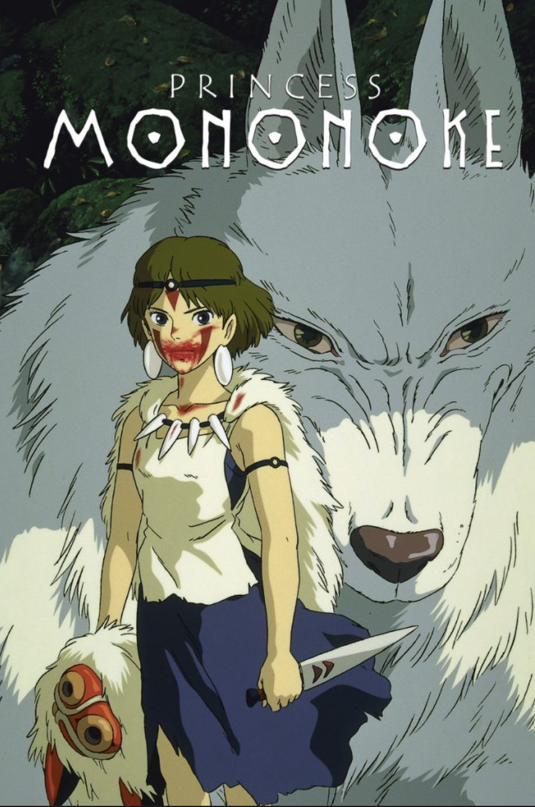

Director: Hayao Miyazaki
Released: 1997
Starring: Yoji Matsuda, Yuriko Ishida, Yuko Tanaka, Kaoru Kobayashi, Masahiko Nishimura, Tsunehiko Kamijo, Akihiro Miwa, Mitsuko Mori, Hisaya Morishige
Princess Mononoke is set in the late Muromachi period (approximately 1336 to 1573) of Japan with fantasy elements. The story follows the young Emishi prince Ashitaka’s involvement in a struggle between the gods of a forest and the humans who consume its resources. The term “Mononoke” is not a name, but a Japanese word for a spirit or monster.